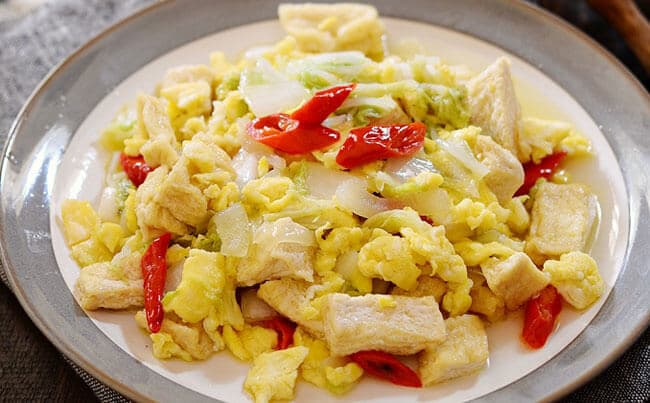

Contact Us
Resep
About Us
Home
Resep Orak-Arik Telur Tahu Sawi Putih

Bahan :
150 gr tahu putih, potong dadu, goreng sebentar
3 btr telur, masak orak-arik
1 bonggol sawi putih, potong-potong
4 siung bawang putih, iris
1 siung bawang bombay, iris
2 bh cabe merah, iris
1/4 sdt merica bubuk
Gula, secukupnya
Garam, secukupnya
Minyak, secukupnya
Cara Membuat :
Langkah 1 : Panaskan minyak diatas wajan kemudian masukkan bawang bombay, bawang putih dan irisan cabe merah tumis hingga harum.
Langkah 2 : Masukkan sawi putih, aduk sebentar. Masak hingga agar layu.
Langkah 3 : Masukkan tahu goreng dan telur orak-arik.
Langkah 4 : Kemudian tambahkan merica bubuk, garam dan gula.
Langkah 5 : Aduk rata semua bahan hingga bumbu meresap. Koreksi rasa.
Langkah 6 : Setelah pas Anda bisa menyajikannya.
Simpel dan praktis bukan membuatnya. Tunggu apalagi yuk segera beli bahan-bahannya dan praktekkan sendiri didapur Anda tercinta. Selamat mencoba :)